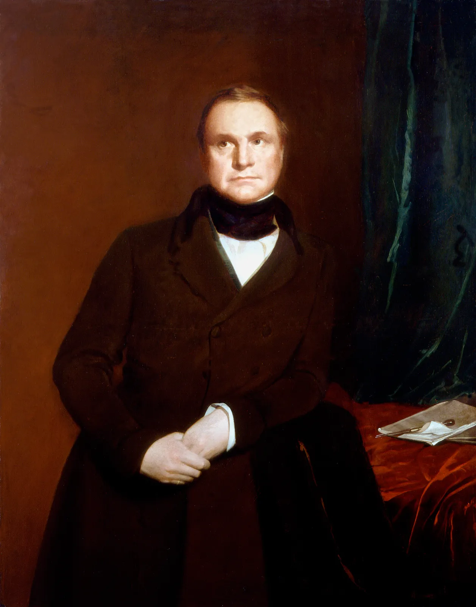
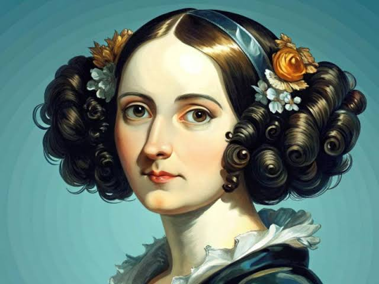
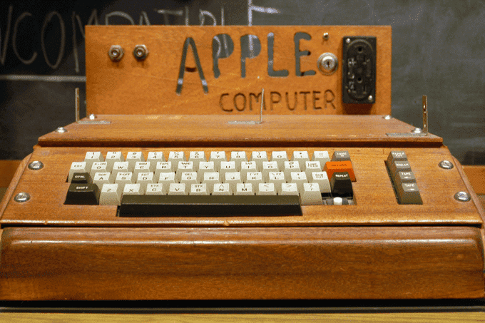
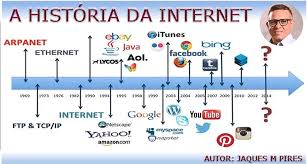
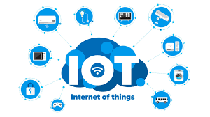

História da Computação
A história da computação é fascinante e remonta a séculos atrás.
Desde os primeiros dispositivos mecânicos até os computadores modernos, a evolução da tecnologia tem transformado o mundo.
Os Primeiros Dispositivos de Cálculo
Os primeiros dispositivos de cálculo foram criados para facilitar operações matemáticas. Um dos mais antigos é o ábaco, usado há milhares de anos.
Outro marco importante foi a criação da máquina de calcular por Blaise Pascal no século XVII.
A Era dos Computadores Mecânicos
No século XIX, Charles Babbage projetou a Máquina Diferencial e a Máquina Analítica, consideradas os primeiros conceitos de computadores programáveis.

Ada Lovelace, uma matemática brilhante, é reconhecida como a primeira programadora por seu trabalho na Máquina Analítica.

O Surgimento dos Computadores Eletrônicos
Na década de 1940, os primeiros computadores eletrônicos foram desenvolvidos.
O ENIAC foi um dos primeiros computadores digitais e marcou o início da era da computação moderna.
Outro marco foi o Colossus, usado para decifrar códigos durante a Segunda Guerra Mundial.

A Revolução dos Microprocessadores
O Nascimento dos PCs
Nos anos 1970, a invenção do microprocessador permitiu a criação de computadores pessoais (PCs). Empresas como Apple e Microsoft lideraram essa revolução.

O Apple I, lançado em 1976, foi um dos primeiros PCs a se popularizar.
A Internet e a Era Digital
A criação da Internet nos anos 1990 transformou a computação, conectando pessoas e dispositivos em todo o mundo.

Hoje, a computação em nuvem, a inteligência artificial e a Internet das Coisas (IoT) são tendências que continuam a moldar o futuro.


Conclusão
A história da computação é uma jornada de inovação e criatividade.
Cada avanço trouxe novas possibilidades e mudou a forma como vivemos e trabalhamos.
Para saber mais, visite este link